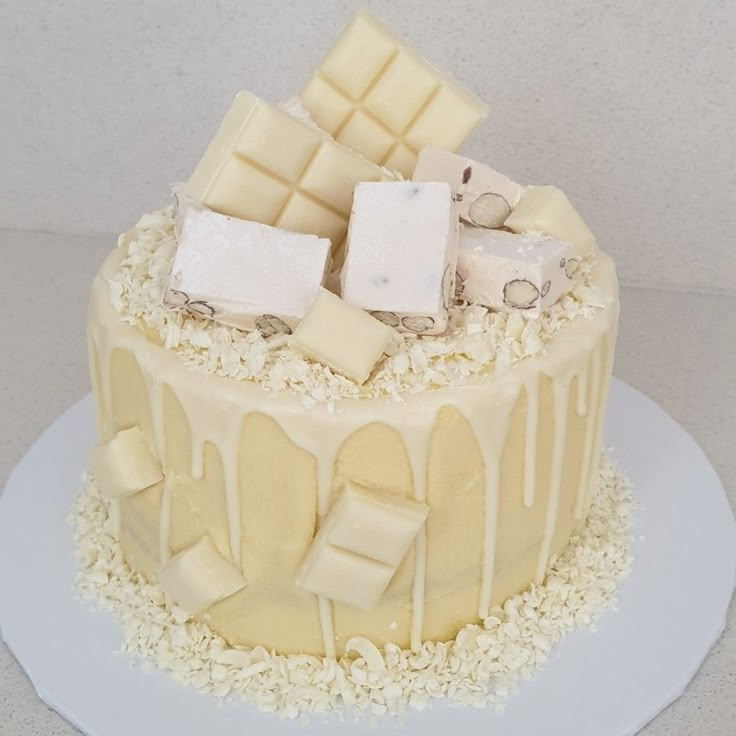

This is a really easy yet exceptional Chocolate Cake that truly tastes of chocolate.
The crumb is beautifully tender andmoist, and it keeps for up to 5 days. It requires no beater,
just a wooden spoon.
Frost generously with
Chocolate Buttercream Frosting for a terrific birthday cake or chocolate ganache a luxurious
rich option. For a richer, fudgier chocolate cake, try this Chocolate Fudge Cake . The ultimate glaze to impress,
however, is without a doubt Chocolate Mirror Glaze…..

Below are the ingredients for this cake
unsweetened (Note 2)
(bi-carb soda)
(Note 1)
(~55-65g / 2 oz each)
(low or full fat)
(or canola)
Chocolate Buttercream Frosting
(slide scaler on recipe)
sugar:
1/2 spoons.
floor
2 1/2 cups of flour.